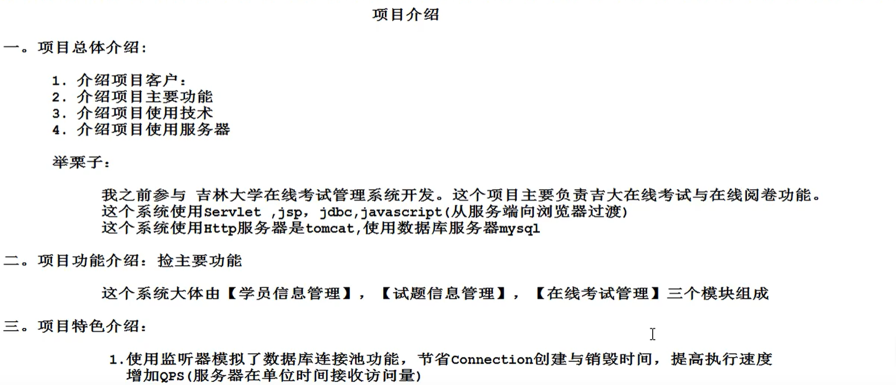

模拟面试
一、方法重载和方法重写
方法重载：
1、方法重载：JAVA中允许同一个类文件中出现多个方法名相同，参数列表不同的同名方法，这种现象称为方法重载。
2、方法重载的条件：
1.同一个类中；
2.方法名相同；
3.参数的个数，类型和顺序不同，都会构成方法重载。
（返回值和权限修饰符不会构成方法重载）
方法重写：
1、发生具有继承关系的子类和父类中，子类对父类方法实现的细节进行重新定义。
2、注意：
1.重写方法的访问权限不能更低，可以更高；
2.由private或者final修饰的方法不能被重写；
3.重写方法抛出的异常不能更多（更大），可以更少（更小）；
4.重写方法时，可以缩小返回值类型范围，但是不能增加返回值类型范围。
5、可以重写父类静态方法，但不能将父类静态方法写为非静态方法。
二、方法的重载、重写与多态性（方法的重载是多态性的一种体现？NO）
从编译和运行的角度看：
重载，是指允许存在多个同名方法，而这些方法的参数不同。 编译器根据方法不同的参数表， 对同名方法的名称做修饰。对于编译器而言，这些同名方法就成了不同的方法。 它们的调用地址在编译期就绑定了。 Java的重载是可以包括父类和子类的，即子类可以重载父类的同名不同参数的方法。
所以：对于重载而言，在方法调用之前，编译器就已经确定了所要调用的方法，这称为“早绑定”或“静态绑定” ；
而对于多态，只有等到方法调用的那一刻， 解释运行器才会确定所要调用的具体方法，这称为“晚绑定”或“动态绑定” 。
引用一句Bruce Eckel的话： “不要犯傻，如果它不是晚绑定， 它就不是多态。”
所以说，方法的重载并不是多态性的一种体现。
三、throw和throws
1、throws
1>声明位置：方法名之后；
2>作用：通知开发人员当前方法在运行时，【有可能会抛出异常】
3>携带数据 throws后面携带【异常类型】，一个throws可以携带多个【异常类型】
4>调用：当一个方法被throws修饰时，调用方法时必须考虑异常捕捉问题。
2、throw
1>声明位置：在方法执行体；
2>作用：throw是一个命令，执行时会抛出一个指定的异常对象。
3>携带数据：throw后面携带【异常对象】，一个throw一次只能携带一个异常对象；
4>调用：当一个方法内部存在throw命令，在调用时可以不考虑异常的捕捉问题。
四、接口和抽象类的区别：
1、接口
1>是一种特殊的类文件
2>作用：指定规则，降低耦合度。
3>使用规则：
---接口中只有常量和抽象方法；
java8新特性：1、接口可以定义静态方法；
2、可以定义普通方法，需要 default修饰
3、接口中方法访问权限不能是private
4、接口和接口之间可以实现多继承，但是接口之间不能相互实现
5、接口中不存在构造方法
2、抽象类
1>抽象类由abstract修饰
2>作用：降低接口实现类与接口之间的实现难度（抽象类在实现接口时，可以不对接口中的方法进行重写；但是抽象类没有重写的方法必须由抽象类的子类负责实现）
3>使用规则：
1. 抽象类中可以声明抽象方法，也可以生成具体方法；
2.抽象类声明的抽象方法必须由子类进行重写；
3.抽象类实现接口时，不需要对接口中的方法进行重写；
4.抽象类有构造方法，但是不能使用。
五、abstract 关键字，和哪些关键字不能共存。
final：被final修饰的类不能有子类（不能被继承）。而被abstract修饰的类一定是一个父类（一定要被继承）。
private: 抽象类中的私有的抽象方法，不被子类所知，就无法被复写。
而抽象方法出现的就是需要被复写。
static：如果static可以修饰抽象方法，那么连对象都省了，直接类名调用就可以了。
可是抽象方法运行没意义。
六、多线程interrupt，rable和servead
七、集合扩容因子
八、数组和list集合关系
1、数组存储数据固定，list集合因为有扩容因子的存在，是可变的；
九、线程工作状态，状态之间的转换
十、面向对象设计思想
十一、多线程同步与异步
十二、SQL查询命令（特征，顺序）
